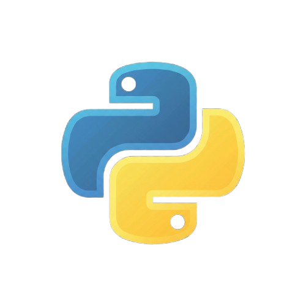
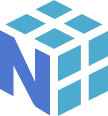
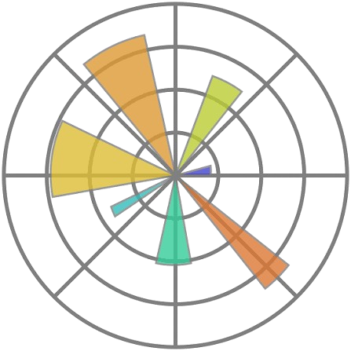
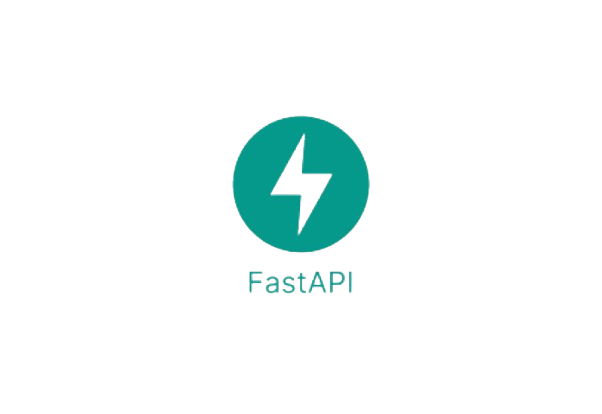

About Me
Scroll down to see skills

Programming
Python
AI / ML Technologies
SQL

Data Science
NumPy
Data Science
Pandas

AI / ML Technologies
Matplotlib
Tools & Platforms
GitHub

Tools & Platforms
FastAPI
DevOps
Docker
Projects